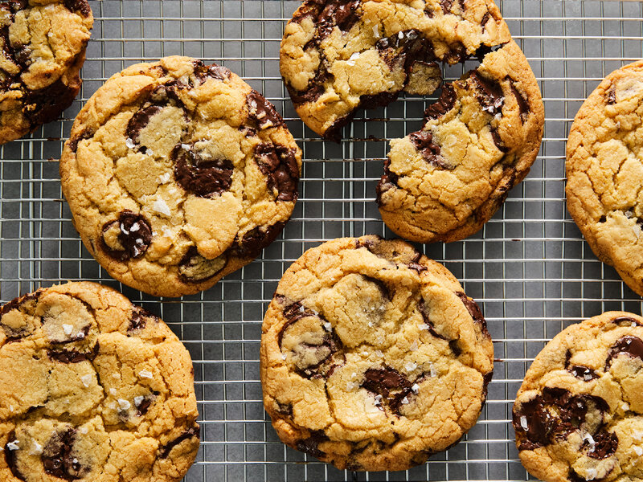

Chocolate Chip Cookies

Description
Delicious chocolate chip cookies with flakey sea salt on top. This easy to
follow recipe will change your outlook on life
Ingredients
- Flour - 200g
- Baking soda - 3/4 tsp
- Pinch of salt
- Butter - 160g
- Brown sugar - 200g
- Refined sugar - 50g
- Egg - 1
- Yolks - 2
- Vanilla extract - 2 tsp
- Chcoolate chips or chopped chocolate, 60% at the most- 170g
- Seasalt to finish
Steps
- Preheat oven to 190°C
- Mix flour, baking soda, and salt in a bowl
- Melt and brown 3/4 of butter
-
After browning butter, melt rest of butter using the residual heat
-
After letting the butter cool, whisk melted butter and both sugars in
seperate bowl
- Whisk in egg, yolks and vanilla extract
- Fold in dry ingredients
- Fold in chocolate
-
(Optional) Refrigerate cookies for at least 1 hour, preferably overnight
- Bake for 8-12 minutes depending on chewy you want them
- Finish with flakes of seasalt and let cool